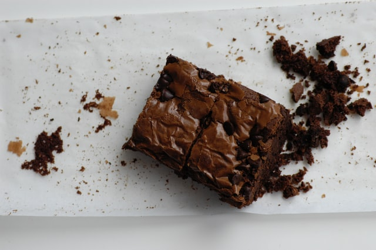

Uma receita de brownie super fácil, de dar água na boca e que fica pronta em apenas 40 minutos!
INGREDIENTES
6 colheres (sopa) bem cheias, de margarina sem sal
4 xícara (chá) achocolatado
1/2 xícara (chá) chocolate em pó
1 e 1/4 xícara (chá) farinha de trigo
2 xícaras (chá) açúcar
4 ovos
2 pitadas de sal
1 colheres (chá) de extrato ou essência de baunilha
1 tablete de chocolate meio amargo picado em cubinhos
1/2 xícara (chá) de nozes picadas ou castanhas de caju granuladas
MODO DE PREPARO
Misture os ovos e o açúcar.
Em seguida, agregue todos os outros ingredientes até formar um creme uniforme.
Despeje em uma assadeira, forrada com papel-manteiga e leve ao forno médio por 40 minutos.
O brownie estará pronto quando a parte de cima estiver levemente corada e, ao se espetar um palito, ele esteja levemente úmido (devido ao chocolate derretido).
Corte em quadrados ainda quente e sirva com uma bola de sorvete de creme, ou congele num saquinho para freezer.
Para descongelar, coloque o brownie num prato de sobremesa e aqueça no micro-ondas, potência alta, por 1 minuto.
INFORMAÇÕES ADICIONAIS
Adicione castanha e nozes a gosto na massa para um sabor ainda mais marcante!